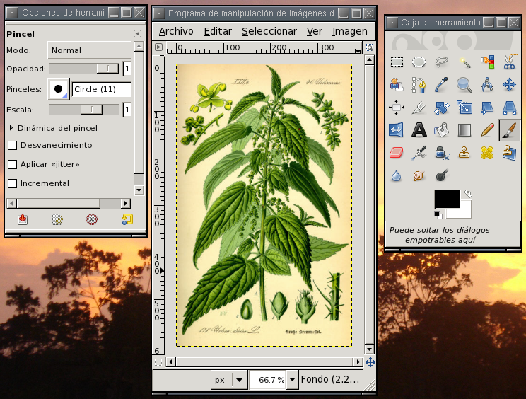
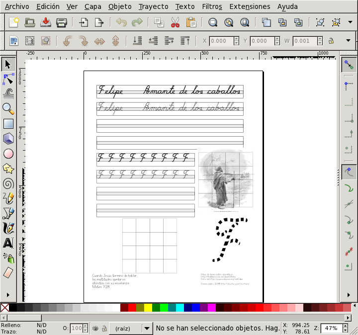
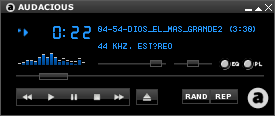
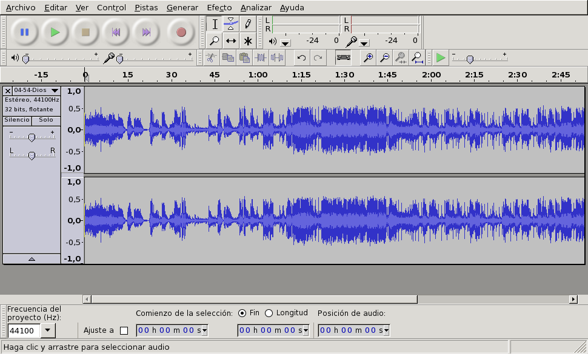

Es un reproductor de audio y video que soporta gran variedad de formatos. Por ejemplo para ver video.flv:
mplayer video.flv
Se distribuye con codecs que pueden distribuirse libremente. Para
que soporte codecs de Windows es importante instalar también el
paquete win32-codecs
También permite hacer conversiones y extraer partes. Por ejemplo para extraer pista de audio de un video descargado de youtube, y dejarla en formato WAV:
mplayer -vo null -ao "pcm:file=pista.wav" -af resample=44100 "video.flv"
Para reproducir 10 segundos de un DVD comenzando en el segundo 240:
mplayer -ss 240 -endpos 10 dvd://1
Se distribuye junto con mencoder que permite
convertir de un formato a otro.
Para ver una gráfica (sin editarla) prácticamente en cualquier
formato, puede usar display incluido en
ImageMagick-6.9.12.2:
display migrafica.png
Otra opción que facilita ver un directorio con imágenes es
xfi incluido en el paquete xfe-1.43.2p0:
xfi migrafica.png
Las operaciones típicas con gráficos son el retoque de fotos y la creación de diagramas. Para retocar fotografías se emplean editores gráficos a nivel de pixels, mientras que para creación de diagramas resultan más convenientes editores de gráficos vectoriales.
Como editor de gráficos a nivel de pixels, el CD de adJ incluye gimp-2.10.24

Como editor vectorial incluye inkscape-1.0.2

OpenOffice incluye otro editor vectorial llamado
draw.
Para la generación de gráficos de barras y estadísticos resulta más apropiado el graficador de gnumeric-1.12.49 o de calc –la hoja de cálculo de OpenOffice–, ver Sección 8.1, “Aplicaciones estilo MS-Office”
Para reproducir una pista de audio en diversos formatos
(incluyendo el libre ogg, el común wav y el patentado mp3) puede
usar mplayer (ver
Sección 10.1, “Mplayer”), o bien
audacious (incluido en el paquete
audacious-4.1p0):

El programa play incluido en el paquete
sox-14.4.2p5 también le permitirá escuchar diversos formatos.
Desde la línea de órdenes podrá recortar, cambiar volumen y
aplicar otros efectos empleando el programa
sox.
Si prefiere un editor gráfico que le permite recortar y aplicar algunos efectos a pistas de audio en prácticamente cualquier formato de audio utilice el programa audacity-2.4.2:
